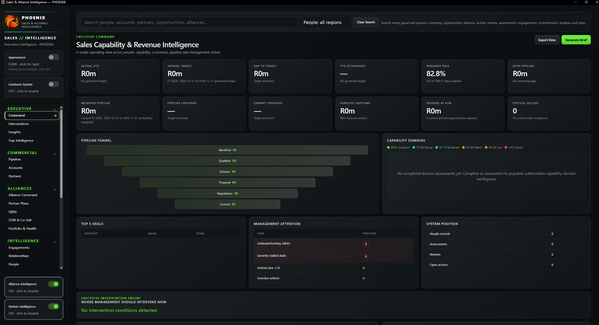

Executive Command
Review targets, pipeline coverage and management attention in a single operating context.
Sales and alliance intelligence designed to bring more structure to account relationships, partner activity and commercial decision-making.
See targets, pipeline stages, capability assessments and management priorities together. The application shown is an actual Phoenix interface; the captured workspace contains no customer records or populated commercial figures.

Authentic interface capture · Executive Command · Empty development workspace · No illustrative financial results
View targets, opportunity stages, weighted pipeline and revenue exposure within one structured operating picture.
Keep alliance plans, partner activity, account relationships and co-selling initiatives visible.
Surface stalled opportunities, overdue actions and capability gaps for executive review.
Phoenix is CoreCloud’s Sales & Alliance Intelligence application. Its development lineage includes a governed local desktop runtime, CRM and relationship workflows, imports, reporting and local data controls.
Organise customer, partner and relationship information within a structured commercial workflow.
Support structured data intake and outputs for review and analysis.
A managed local application runtime, with health and lifecycle mechanisms in its development architecture.
Local data and lifecycle controls are part of the product’s documented development work.
Phoenix is relevant to sales leaders, alliance managers and organisations seeking a more disciplined view of accounts, partnerships and execution. Demonstrations must be based on a verified working release.
Phoenix brings commercial signals into a structured view. The screenshot above shows an actual, unpopulated workspace rather than invented performance figures.
Review targets, pipeline coverage and management attention in a single operating context.
Bring partner plans, co-selling activity and relationship management into the conversation.
Arrange a verified demonstration and assess suitability for your organisation before any commercial commitment.
Enquire about Phoenix ↗We will discuss your requirements and confirm the current demonstration capability.
We can review the business requirement and arrange a product walkthrough when the current runtime has been verified.